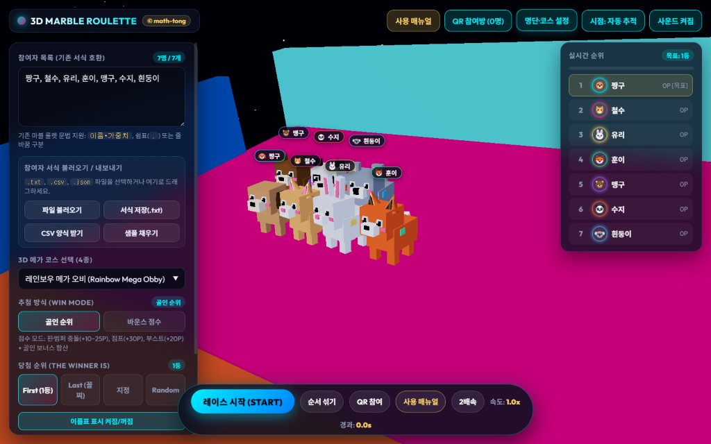

STEP 01 · SCREEN OVERVIEW
전체 화면 구성 안내
게임을 처음 실행했을 때 보이는 메인 화면의 4가지 핵심 영역입니다.

1
2
3
4
| 화면 영역 | 역할 및 주요 버튼 |
|---|---|
| 1상단 메뉴바 | 사용 매뉴얼, QR 참여방, 명단·코스 설정(우측 패널 열기), 시점 전환(자동 추적/전체 뷰/자유 시점), 사운드 켜짐/꺼짐을 제공합니다. |
| 23D 출발선 및 트랙 | 설정창을 접어둔 상태로 시작되므로, 580유닛 경사 코스와 풀컬러 3D 동물 캐릭터가 화면을 가리지 않고 넓게 보입니다. |
| 3좌측 실시간 순위표 | 왼쪽 상단에 배치되어 진행률 막대와 1~20위 실시간 등수·점수를 보여주며, 접기 버튼으로 숨길 수 있습니다. |
| 4하단 메인 컨트롤 바 | 레이스 시작 (START), 연타 부스트 0/10, ● 시작 시 녹화 ON(경기 시작 시 자동 녹화), 영상 저장 (.webm), 2배속이 배치되어 있습니다. |
STEP 02 · SETUP & GOOGLE SHEETS
명단·코스 설정 및 구글 시트 연동
상단 [명단·코스 설정] 버튼을 누르면 오른쪽에 단순화된 접기식 설정창이 열리며, 레이스 시작 시 자동으로 접힙니다.

1
2
3
4
| 설정 항목 | 입력 및 선택 방법 |
|---|---|
| 1참여자 직접 입력 | 홍길동*2, 김철수*3 처럼 쉼표(,)나 줄바꿈으로 구분하며, *숫자는 출전 동물 수(가중치)입니다. |
| 23D 메가 코스 선택 | 레인보우 메가 오비 / 자이언트 풍차 캐니언 / 터보 하이퍼 범퍼 / 메가 드롭 3단 폭포 중 1개를 고릅니다. |
| 3추첨 방식 & 당첨 등수 | 골인 순위 또는 바운스 점수를 선택하고, 당첨 목표(1등·꼴찌·지정·Random)를 지정합니다. |
| 4접기식 파일·구글 시트 연동 | 파일 · 구글 시트 불러오기 및 다운로드를 펼치면 구글 시트 URL 연동, 서식 저장(.txt), CSV 양식 받기와 상세 설명을 확인할 수 있습니다. |
구글 시트(Google Sheets) 명단 불러오기 3단계
- 시트 작성: 1열에
이름, 2열에가중치(숫자)를 입력하거나 1열에만 이름 목록을 작성합니다. (첫 행 헤더이름,가중치는 자동 제외됩니다.) - 공유 설정: 구글 시트 우측 상단 [공유] → 일반 액세스를 '링크가 있는 모든 사용자 (뷰어)'로 변경한 뒤 URL을 복사합니다.
- 불러오기 실행: 설정창의
구글 시트 공유 링크 붙여넣기입력란에 URL을 넣고 [시트 불러오기]를 클릭하면 즉시 명단과 3D 동물이 생성됩니다.
STEP 03 · SOLO RACE
기본 추첨 진행 방법 (PC 단독 사용)
QR 참여 없이 진행자가 PC에서 바로 3D 룰렛을 시작하고 추첨 결과를 확인하는 단계입니다.
1
2
3
진행 순서 및 자동 녹화
- 1하단 메인 컨트롤 바의 [레이스 시작 (START)] 버튼을 누르면 모든 동물이 출발하며 자동 녹화(
● 시작 시 녹화 ON)도 함께 시작됩니다. - 2경기 중 진행자도 [연타 부스트 0/10]을 눌러 전체 가속·피버 효과를 주거나, [순서 섞기]로 출발 전 배치를 바꿀 수 있습니다.
- 3경기가 끝나면
영상 저장 (.webm)과 결과순위표 (.csv)를 바로 내려받을 수 있습니다. (Space키로 2배속 가능)
추첨 방식 2가지 비교
| 추첨 방식 | 우승자 결정 규칙 |
|---|---|
| 골인 순위 (Finish Rank) | 580유닛 코스를 내려와 결승선(FINISH)에 목표 순위(기본 1등)로 통과한 순간 우승자가 확정됩니다. 목표 등수 통과 직전에는 슬로우 모션이 작동합니다. |
| 바운스 점수 (Bounce Score) | 핀(+10P), 범퍼·풍차(+25P), 부스트 패드(+20P), 점프 패드(+30P), 골인 보너스, QR 스마트폰 액션 점수를 합산해 모든 참가자가 도착한 뒤 최고 점수 순위로 결정합니다. |
STEP 04 · QR HOST LOBBY
QR 참여방 열기 (진행자 단계)
여러 명이 스마트폰으로 동시에 접속해 참여할 때 진행자 PC에서 준비하는 단계입니다.
중요 안내: QR 참여 시 경기 시작은 누가 하나요?
진행자(이 PC 화면)가 시작합니다. 참여자들은 스마트폰으로 입장한 뒤 대기하며, 진행자가 아래 4번 [입장 완료! 지금 레이스 시작] 버튼을 눌러야 전원이 동시에 출발합니다.

1
2
3
4
5
| 화면 요소 | 진행자 조작 안내 |
|---|---|
| 1방 번호 · 안내 | 고유 4자리 방 번호(예: ROOM 2167)와 진행자 시작 방식 안내가 표시됩니다. |
| 2접속 QR 코드 | 참여자가 스마트폰 카메라로 스캔하면 모바일 컨트롤러로 바로 접속됩니다. |
| 3입장 확인 명단 | 서버 연결 상태와 QR로 입장 완료한 참여자 목록이 실시간으로 추가됩니다. |
| 4진행자 레이스 시작 | 모든 인원이 모이면 이 버튼을 눌러 QR 창을 닫고 경기를 출발시킵니다. |
| 5링크 복사 · 비우기 | 참여 링크 복사 또는 샘플 명단을 지우는 기존 목록 비우고 QR만 받기를 사용할 수 있습니다. |
STEP 05 · QR PARTICIPANT CONTROLLER
QR 동시 접속 화면 및 목적지 공략 가이드 (참여자)
스마트폰 조작 화면 구성과, 진행자 3D 화면을 보며 남들보다 더 빨리 목적지에 도달하는 실전 방법입니다.

1
2
3
4
| 모바일 화면 영역 | 역할 및 조작 방법 |
|---|---|
| 1참가 캐릭터 · 상태 배지 | QR 입장 시 고른 동물·닉네임과 경기 상태(진행자 시작 대기 중 → 레이스 진행 중)를 보여줍니다. |
| 2대형 연타 부스트 · 피버 게이지 | 누를 때마다 즉시 전진 가속(+8P)이 걸리며, 10연타 달성 시 피버 하이퍼 부스트(+60P)와 대형 3D 충격파가 발동합니다. |
| 33대 핵심 스킬 버튼 | 랜덤 럭키박스, 대시 부스트(+15P), 슈퍼 점프(+20P) 버튼입니다. 하단 게이지 바가 채워지면 바로 다시 누를 수 있습니다. |
| 4응원 · 마이크 음성 채팅 | 무제한 응원 4종(+5P), 마이크로 음성 응원 말하기(+5P), 텍스트 채팅 입력 영역입니다. 진행자 화면 우측 하단 창과 내 캐릭터 머리 위에 말풍선으로 표시됩니다. |
화면을 보며 목적지에 더 빨리 도달하는 실전 공략 전략 4가지
QR 참여자는 스마트폰 버튼만 맹목적으로 누르기보다 진행자 PC(또는 빔프로젝터)의 3D 트랙 화면을 함께 보면서 상황에 맞는 버튼을 누르면 결승선에 훨씬 빠르게 도달할 수 있습니다.
- 출발 직후 · 탁 트인 직선 구간 → [연타 부스트! (TAP! TAP!)] 집중 연타
앞이 트여 있을 때 가장 큰 주황·핑크 연타 버튼을 빠르게 연타해 추진력을 누적하세요. 10회마다 터지는 피버 하이퍼 부스트(+60P)가 선두 추월의 핵심입니다. - 회전 풍차 · 스위퍼 · 핀 밀집 구간 직전 → [슈퍼 점프] 타이밍 도약
진행자 화면에서 내 캐릭터 바로 앞에 회전 장애물이나 좁은 문이 보일 때 [슈퍼 점프(+20P)]를 누르면 공중으로 장애물을 뛰어넘어 멈칫하는 손실을 줄일 수 있습니다. - 충돌 감속 및 코너 탈출 직후 → [대시 부스트] 즉시 재가속
핀이나 벽에 부딪혀 속도가 떨어졌을 때 [대시 부스트(+15P)]를 눌러 정체 구간을 빠르게 빠져나오세요. - 바운스 점수 추첨 모드일 때 → [랜덤 럭키박스] + [응원/음성 채팅] 병행
점수가 중요할 때는 쿨타임마다 [랜덤 럭키박스(최대 +50P 및 대박 터보)]를 돌리고, 쿨타임 대기 중에도 쉬지 않고 응원·음성 채팅(+5P)을 보내 점수 격차를 벌리세요.
QR 접속자가 동시에 누를 수 있는 실시간 액션 및 쿨타임 상세 표
| 액션 버튼 | 대기시간 | 발동 효과 · 3D 연출 · 점수 반영 |
|---|---|---|
| 대형 연타 부스트 / 10연타 피버 | 제한 없음 | 누를 때마다 전방 가속(+8P). 10연타 도달 시 피버 하이퍼(+60P) + 대형 충격파 & 빛기둥 발동 |
| 랜덤 럭키박스 뽑기 | 3.5초 | 대박 터보(+40P) / 슈퍼 점프(+30P) / 팡팡 바운스(+25P) / 골드 보너스(+50P) 중 무작위 1개 발동 |
| 대시 부스트 | 3.0초 | 전방 급가속 + 하늘색 충격파·빛기둥 + 상단 배너 + 15P 적립 |
| 슈퍼 점프 | 2.5초 | 장애물 뛰어넘기 큰 도약 + 민트 충격파·빛기둥 + 상단 배너 + 20P 적립 |
| 실시간 응원 · 마이크 음성/채팅 | 제한 없음 | 응원 버튼, 한국어 음성 인식(STT), 텍스트 전송 시 캐릭터 머리 위 말풍선 + 우측 하단 채팅창 반영 + 회당 5P |
STEP 06 · RESULTS & FAQ
당첨 결과 확인 및 자주 묻는 질문
결승선을 통과하거나 점수 합산이 끝나면 최종 당첨자 팝업이 나타납니다.

1
2
3
| 결과 영역 | 표시 내용 |
|---|---|
| 1당첨 캐릭터 · 이름 | 우승한 동물의 풀컬러 캐릭터 배지, 이름, 최종 획득 점수 및 바운스 횟수를 보여줍니다. |
| 2종합 점수 TOP 5 | 골인 1등과 점수 1등을 나란히 표시하고, 상위 5명의 점수와 결승 등수를 요약합니다. |
| 3영상·결과 저장 및 다시 추첨하기 | 자동 녹화된 녹화 영상 다운로드 (.webm)와 결과 순위표 저장 (.csv)을 내려받거나, 순서를 새로 섞어 즉시 재경기를 시작할 수 있습니다. |
자주 묻는 질문 (FAQ) 펼쳐보기
- Q. QR 코드를 스캔했는데 호스트 화면에 참여자가 추가되지 않습니다.
QR 참여방 하단에[연결됨] 실시간 멀티 서버가 표시되어 있는지 확인해 주세요. 공용 네트워크 방화벽이 8084 포트를 차단하는 경우 모바일 데이터를 사용하는 스마트폰 또는 같은 PC의 다른 브라우저 탭으로 테스트해 주세요. - Q. 같은 닉네임으로 다시 입장하면 인원이 2배로 늘어나나요?
아닙니다. 기존 닉네임이 유지된 채 마지막으로 선택한 동물 캐릭터로 변경됩니다. - Q. 구글 시트 링크를 넣었는데 불러오기에 실패합니다.
구글 시트 우측 상단 [공유]에서 일반 액세스가 '링크가 있는 모든 사용자 (뷰어)'로 열려 있는지 확인해 주세요.